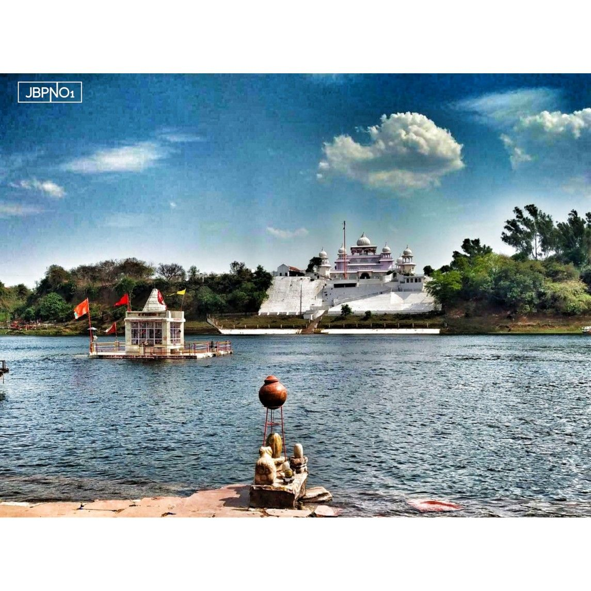
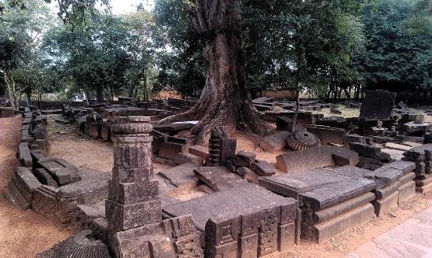

Gwarighat
Gwarighat is a small town on the banks of the river Narmada near the city of Jabalpur in Madhya Pradesh, India.[1] Hindus perform their cremation rites here as per Garuda Purana. It is associated with Hindu Puranas, also; due to the presence of Narmada Sidh Kund, near Uma Ghat, wherein renowned Rishis performed Tapas (Indian religions), and it is believed that people are cured of their ailments here. Maa Narmada Temple is also situated here, where Narmada Aarti, is performed in the evenings

Kachnar city
Kachnar city is the favorite place for devotees of Lord Shiva. The statue of lord shiva is built 76ft high under the sky. There are also replicas of 12 Jyotirlinga of lord shiva. The surroundings add more beauty to this place with lots of greenery. The perfect lighting makes it more attractive in the night. And if you are visiting this place on “shiva ratri”, there are many possibilities that you may not get a place to stand because almost every Shiva devotee visit this place on that day.

Tripur Sundari Temple
Tripura Sundari Temple is a Hindu temple of the Goddess Tripura Sundari, better known locally as Devi Tripureshwari. The temple is situated in the ancient city of Udaipur, about 55 km from Agartala, Tripura and can be reached by train and road from Agartala. It is believed to be one of the holiest Hindu shrines in this part of the country and witnesses the highest number of visitors for a temple in North-East India, after Kamakhya Temple in Assam.

Kankali Devi Temple
Of the monuments, the Kankali Devi Temple is most notable and is a Gupta period temple.It is one of the oldest surviving Hindu temples, illustrating the formative stages of Hindu temple architecture and the essential elements found in the north Indian style through the modern era. It has a sanctum and an open portico supported on four pillars. The sides of the portico were filled in with walls containing panels at a later period. The sanctuary is, and always was, covered with a flat roof, and is generally very similar to the Gupta period Temple 17 at Sanchi.

Pisanhari ki Madiya
Pisanhari ki Marhia is a Jain temple built in the 15th century and located in the city of Jabalpur in Madhya Pradesh, India. The temple is named after its creator, a local woman who, according to legend, paid for the construction of the temple with the money she saved from milling flour. Many other temples have since been added making this a tirtha

Hanumantal Jain Mandir
This temple located right on the edge of hanumantal is a historic temple. It has a beautiful architecture like a palace with Shikhar and domb. This is also one of the Atishay ksetra(Place of miracle). This temple is open for 24 hours. With a recitation of bhaktambar Strotra, one could feel a magic in the atmosphere. And a lake in front of the temple provides a beautiful view with cold breeze.